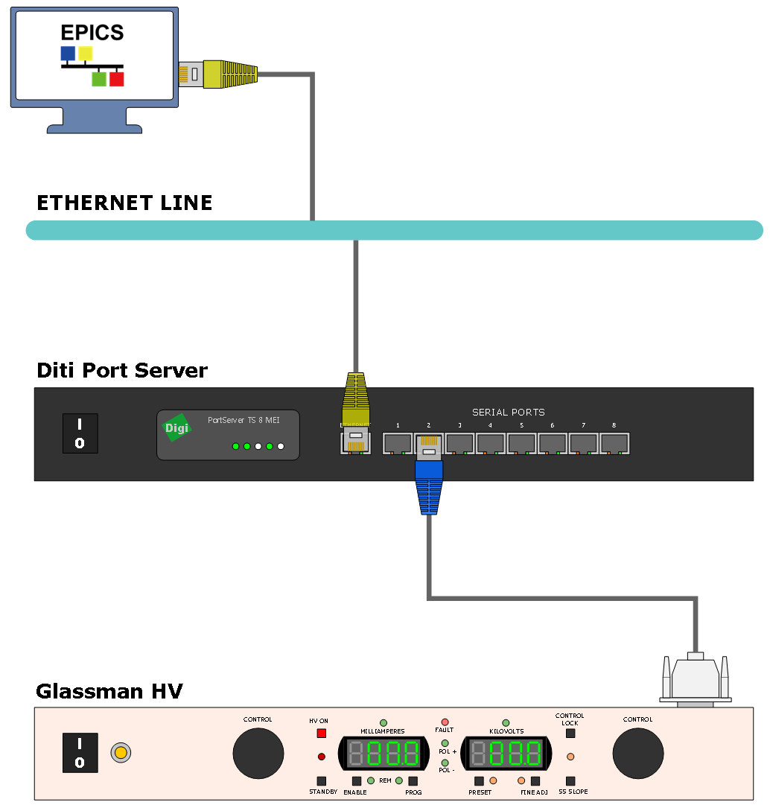
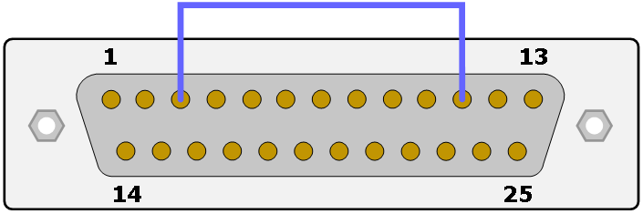

Glassman High Voltage Application
Glassman Hight Voltage Library를 이용하여 Application을 만들어 보자.
시스템 구성은 다음과 같다.
Digi Port와 Device를 연결하기 위해서는 아래 Pin Assignments에 따라 제작된 Cable를 사용해야 한다. 제공해 주는 RJ45 to DSUB Convert를 사용하면 별도로 Cable을 만들지 않아도 된다. 물론 TxD와 RxD가 중간에 Cross되어 있어야 한다.

Ethernet을 통해 Serial을 사용하기 위해서는 다음 그림과 같이 Port Profile 이 Consol Management로 되어있어야 한다. 설정하는 방법은 다음과 같다.
- 웹 브라우저를 통해 Digi Port Server로 접속
- 로그인 화면이 나오면 설정된 ID와 PW로 접속(기본 설정은 ID:root, PW:dbps)
- Configuration에서 Serial Ports를 선택
- Serial이 연결된 Prot를 선택
- Port Profile에서 Change Profile선택
- Console Management 선택
- Apply 클릭
마지막으로 Glassman HV장비의 경우 내부 Interlock이 걸려 있다. 만약 Interlock을 해제하지 않으면 HV On이 안되고 결과적으로 Voltage를 설정하더라도 출력되지 않으므로 Interlock을 해제하고 사용해야 한다. 해제하는 방법은 아래 그림과 같이 기본적으로 제공해주는 DSUB 25pin Connector 3번과 11번을 연결하고 장비 뒤 25pin Connector에 꽂으면 된다.
Application을 만들기 전 필요한 Library를 설치한다. siteLibs안에 있는 asyn-4-21, seq-2.1.16, glassManPSLib 폴더를 각각 make를 한다. 만약 siteLibs가 없다면 svn에서 내려받는다.
scwook@scwook:~/epics/R3.14.12.4$ svn export svn://10.1.5.14/raon/trunk/siteLibs siteLibs scwook@scwook:~/epics/R3.14.12.4$ cd siteLibs/asyn-4-21 scwook@scwook:~/epics/R3.14.12.4/siteLibs/asyn-4-21$ make scwook@scwook:~/epics/R3.14.12.4/siteLibs/asyn-4-21$ cd ../seq-2.1.16 scwook@scwook:~/epics/R3.14.12.4/siteLibs/seq-2.1.16$ make scwook@scwook:~/epics/R3.14.12.4/siteLibs/seq-2.1.16$ cd ../glassManPSLib scwook@scwook:~/epics/R3.14.12.4/siteLibs/glassManPSLib$ make
Library가 준비되었으면 siteApps 폴더안에 glassmanHV 폴더를 만들고 Base EPICS IOC를 생성한다.
scwook@scwook:~/epics/R3.14.12.4/siteApps$ mkdir glassManPS scwook@scwook:~/epics/R3.14.12.4/siteApps$ cd glassManPS scwook@scwook:~/epics/R3.14.12.4/siteApps/glassManPS$ makeBaseApp.pl -t ioc glassManPS scwook@scwook:~/epics/R3.14.12.4/siteApps/glassManPS$ makeBaseApp.pl -i -t ioc glassManPS Using target architecture linux-x86_64 (only one available) The following applications are available: glassManPS What application should the IOC(s) boot? The default uses the IOC's name, even if not listed above. Application name?
configure/RELEASE 파일에 asyn과 stream Library 경로를 추가해 준다.
RELEASE
# RELEASE - Location of external support modules
#
# IF YOU MAKE ANY CHANGES to this file you must subsequently
# do a "gnumake rebuild" in this application's top level
# directory.
#
# The build process does not check dependencies against files
# that are outside this application, thus you should do a
# "gnumake rebuild" in the top level directory after EPICS_BASE
# or any other external module pointed to below is rebuilt.
#
# Host- or target-specific settings can be given in files named
# RELEASE.$(EPICS_HOST_ARCH).Common
# RELEASE.Common.$(T_A)
# RELEASE.$(EPICS_HOST_ARCH).$(T_A)
#
# This file should ONLY define paths to other support modules,
# or include statements that pull in similar RELEASE files.
# Build settings that are NOT module paths should appear in a
# CONFIG_SITE file.
TEMPLATE_TOP=$(EPICS_BASE)/templates/makeBaseApp/top
# If using the sequencer, point SNCSEQ at its top directory:
#SNCSEQ=$(EPICS_BASE)/../modules/soft/seq
# EPICS_BASE usually appears last so other apps can override stuff:
EPICS_BASE=/home/scwook/epics/R3.14.12.4/base
# Set RULES here if you want to take build rules from somewhere
# other than EPICS_BASE:
#RULES=/path/to/epics/support/module/rules/x-y
ASYN=${EPICS_PATH}/siteLibs
STREAM=${EPICS_PATH}/siteLibs
glassManPSApp/src/Makefile 파일에 Library와 dbd파일을 추가해 준다.
Makefile TOP=../.. include $(TOP)/configure/CONFIG #---------------------------------------- # ADD MACRO DEFINITIONS AFTER THIS LINE #============================= USR_INCLUDES += -I$(RAON_SITELIBS)/include USR_DBDFLAGS += -I$(RAON_SITELIBS)/dbd USR_INCLUDES += -I$(EPICS_EXTENSIONS)/include glassManPS_DIR += $(RAON_SITELIBS)/lib/$(T_A) #============================= # Build the IOC application PROD_IOC = glassManPS # glassManPS.dbd will be created and installed DBD += glassManPS.dbd # glassManPS.dbd will be made up from these files: glassManPS_DBD += base.dbd # Include dbd files from all support applications: #glassManPS_DBD += xxx.dbd glassManPS_DBD += stream.dbd glassManPS_DBD += drvAsynIPPort.dbd glassManPS_DBD += gmpsRecord.dbd glassManPS_DBD += devFj01n120.dbd glassManPS_DBD += devFj10n12.dbd glassManPS_DBD += devEt50p40.dbd # Add all the support libraries needed by this IOC #glassManPS_LIBS += xxx glassManPS_LIBS += glassManPS glassManPS_LIBS += asyn glassManPS_LIBS += stream # glassManPS_registerRecordDeviceDriver.cpp derives from glassManPS.dbd glassManPS_SRCS += glassManPS_registerRecordDeviceDriver.cpp # Build the main IOC entry point on workstation OSs. glassManPS_SRCS_DEFAULT += glassManPSMain.cpp glassManPS_SRCS_vxWorks += -nil- # Add support from base/src/vxWorks if needed #glassManPS_OBJS_vxWorks += $(EPICS_BASE_BIN)/vxComLibrary # Finally link to the EPICS Base libraries glassManPS_LIBS += $(EPICS_BASE_IOC_LIBS) #=========================== include $(TOP)/configure/RULES #---------------------------------------- # ADD RULES AFTER THIS LINE
glassManPSApp/Db 폴더로 이동 후 glassManPS.db 파일을 만들고 Makefile에 추가해 준다.
glassManPS.db
record(ao, "$(PS):VOL")
{
field(FLNK, "$(PS):CMD")
}
record(ao, "$(PS):CUR")
{
field(FLNK, "$(PS):CMD")
}
record(bo, "$(PS):ON")
{
field(FLNK, "$(PS):CMD")
}
record(gmps, "$(PS):CMD")
{
field(DTYP, "$(PS)")
field(OUT, "@glassManPS.proto set_value $(P)")
field(INPA, "$(PS):VOL")
field(INPB, "$(PS):CUR")
field(INPC, "$(PS):ON")
}
record(ai, "$(PS):Vmon")
{
field(DTYP, "stream")
field(INP, "@glassManPS.proto get_voltage $(P)")
field(LINR, "LINEAR")
field(EGUF, "1000")
field(EGUL, "0")
field(EGU, "V")
field(ESLO, "0.977517106549364")
field(EOFF, "0")
field(SCAN, "1 second")
}
record(ai, "$(PS):Imon")
{
field(DTYP, "stream")
field(INP, "@glassManPS.proto get_current $(P)")
field(SCAN, "1 second")
field(LINR, "LINEAR")
field(EGUF, "1000")
field(EGUL, "0")
field(EGU, "mA")
field(ESLO, "0.977517106549364")
field(EOFF, "0")
}
record(mbbiDirect, "$(PS):ST")
{
field(DTYP, "stream")
field(INP, "@glassManPS.proto get_st $(P)")
field(SCAN, "1 second")
field(NOBT, "8")
}
record(stringout, "$(PS):RESET")
{
field(DTYP, "stream")
field(OUT, "@glassManPS.proto set_reset $(P)")
}
Makefile TOP=../.. include $(TOP)/configure/CONFIG #---------------------------------------- # ADD MACRO DEFINITIONS AFTER THIS LINE #---------------------------------------------------- # Optimization of db files using dbst (DEFAULT: NO) #DB_OPT = YES #---------------------------------------------------- # Create and install (or just install) into/db # databases, templates, substitutions like this #DB += xxx.db DB += glassManPS.db #---------------------------------------------------- # If .db template is not named *.template add # _template = include $(TOP)/configure/RULES #---------------------------------------- # ADD RULES AFTER THIS LINE
glassManPS폴더로 이동한 후 make를 실행한다.
scwook@scwook:~/epics/R3.14.12.4/siteApps/glassManPS$ make
ioc를 실행하기 위해 iocBoot/iocglassManPS 폴더로 이동하여 st.cmd파일에 AsynIPPortConfigure와 glassManPS.db를 추가해 준다.
st.cmd
#!../../bin/linux-x86_64/glassManPS
## You may have to change glassManPS to something else
## everywhere it appears in this file
< envPaths
cd ${TOP}
epicsEnvSet "STREAM_PROTOCOL_PATH" "../../proto"
## Register all support components
dbLoadDatabase "dbd/glassManPS.dbd"
glassManPS_registerRecordDeviceDriver pdbbase
drvAsynIPPortConfigure("port2", "10.1.5.162:2102", 0, 0, 0)
## Load record instances
#dbLoadRecords("db/xxx.db","user=scwookHost")
dbLoadRecords("db/glassManPS.db", "PS=fj01n120,P=port2")
cd ${TOP}/iocBoot/${IOC}
iocInit
## Start any sequence programs
#seq sncxxx,"user=scwookHost"
참고로 Digi Port에서 Ethernet을 통해 Serial로 접근할 경우 Ethernet Port는 2101번 부터 시작한다. 여기서는 2번째 Port에 연결하였으므로 2102번으로 연결 하였다. 또한 LoadRecord의 2번째 변수인 PS는 Device에 맞게 적어주면 된다. 여기서는 fj01n120 모델로 테스트 하였으므로 PS를 fj01n120으로 하였다.
st.cmd를 실행파일로 변경한 후 실행한다.
scwook@scwook:~/epics/R3.14.12.4/siteApps/glassManPS/iocBoot/iocglassManPS$ chmod 755 st.cmd scwook@scwook:~/epics/R3.14.12.4/siteApps/glassManPS/iocBoot/iocglassManPS$ ./st.cmd #!../../bin/linux-x86_64/glassManPS ## You may have to change glassManPS to something else ## everywhere it appears in this file < envPaths epicsEnvSet("ARCH","linux-x86_64") epicsEnvSet("IOC","iocglassManPS") epicsEnvSet("TOP","/home/scwook/epics/R3.14.12.4/siteApps/glassManPS") epicsEnvSet("EPICS_BASE","/home/scwook/epics/R3.14.12.4/base") cd /home/scwook/epics/R3.14.12.4/siteApps/glassManPS epicsEnvSet "STREAM_PROTOCOL_PATH" "../../proto" ## Register all support components dbLoadDatabase "dbd/glassManPS.dbd" glassManPS_registerRecordDeviceDriver pdbbase drvAsynIPPortConfigure("port2", "10.1.5.162:2102", 0, 0, 0) ## Load record instances #dbLoadRecords("db/xxx.db","user=scwookHost") dbLoadRecords("db/glassManPS.db", "PS=fj01n120,P=port2") cd /home/scwook/epics/R3.14.12.4/siteApps/glassManPS/iocBoot/iocglassManPS iocInit Starting iocInit ############################################################################ ## EPICS R3.14.12.4 $Date: Mon 2013-12-16 15:51:45 -0600$ ## EPICS Base built Oct 14 2014 ############################################################################ iocRun: All initialization complete ## Start any sequence programs #seq sncxxx,"user=scwookHost" epics>
Voltage를 설정하고 값을 읽어 본다. 값이 제대로 읽히면 끝!
epics> dbl fj01n120:Imon fj01n120:Vmon fj01n120:CUR fj01n120:VOL fj01n120:ON fj01n120:ST fj01n120:RESET fj01n120:CMD epics> dbpf fj01n120:VOL 10 DBR_DOUBLE: 10 epics> dbpf fj01n120:ON 1 DBR_STRING: epics> dbpr fj01n120:Vmon ASG: DESC: DISA: 0 DISP: 0 DISV: 1 NAME: fj01n120:Vmon RVAL: 10 SEVR: NO_ALARM STAT: NO_ALARM SVAL: 0 TPRO: 0 VAL: 9.77517106549364